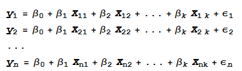
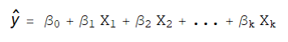
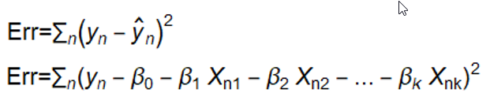
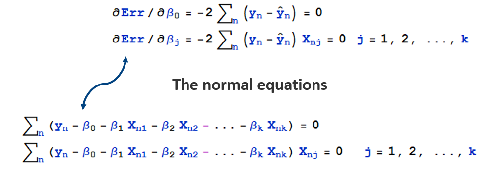
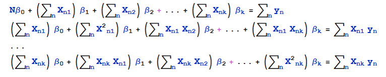
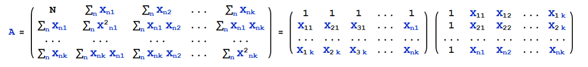
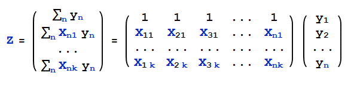
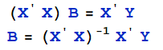
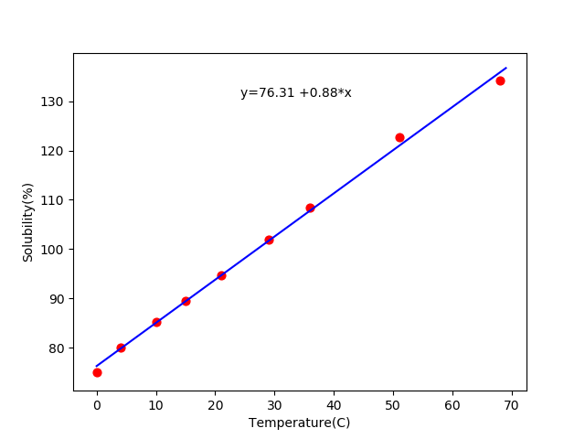

Minimum Mean Square Error¶
Introduction¶
An estimation method which minimizes the mean square error (MSE), which is a common measure of estimator quality, of the fitted values of a dependent variable.
Question¶
Assume we have a lot of data. we make an equation of matrix Y,X
What we want is get B matrix to estimate Y
How????
Math Algorithm¶
A popular algorithm is MMSE. MMSE definition is to minimize the error of y and y-estimate
With given data, Err is β’s non-negative 2nd order function. It’s minimum value is exist. The partial derivative should be zero for error minimization.
Normal Equations
Left side coefficient Matrix is symmetric matrices A=X’ X
Right side constant item Z can be expressed in Z=X’ Y
Finally

MMSE Example¶
| Temperature | 0 | 4 | 10 | 15 | 21 | 29 | 36 | 51 | 68 |
|---|---|---|---|---|---|---|---|---|---|
| Solubility(%) | 75.7 | 80 | 85.3 | 89.6 | 94.7 | 101.9 | 108.4 | 122.6 | 134.1 |
Using 1st-order function to calculate B
#!python3 import matplotlib.pyplot as plt import numpy as np x=np.array([0,4,10,15,21,29,36,51,68]) y=np.array([75.,80,85.3,89.6,94.7,101.9,108.4,122.6,134.1]) x_constant=np.ones(len(x)) x_final=np.array([x_constant,x]) mat_X=np.asmatrix([x_constant,x]).T mat_Y=np.asmatrix(y) mat_B=np.linalg.pinv(mat_X.T*mat_X)*mat_X.T*mat_Y.T #MMSE #Moore-Penrose coef1=np.asarray(mat_B)[0][0] coef2=np.asarray(mat_B)[1][0] lx = np.arange(0, 70) ly = coef1+coef2 * lx plt.plot(lx, ly, color='blue') plt.scatter(x, y, c='red', s=40, marker='o') plt.annotate('y=%.2f +%.2f*x'%(coef1,coef2),xy=(20,100),xytext=(20, 120), textcoords='offset points') plt.xlabel('Temperature(C)') plt.ylabel('Solubility(%)') plt.show()